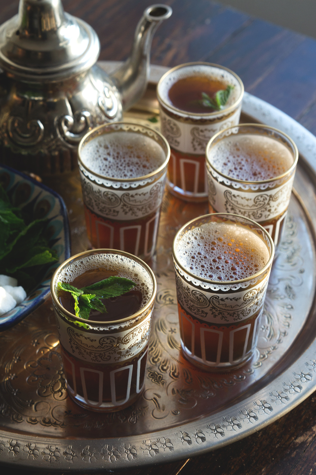

Moroccan tea

Description
All around the world Moroccan mint tea is probably the most famous emblem of Morocco. Everyone knows about it and loves it, but making it remains a mystery.
For Moroccans, mint tea is as important as earl grey is for the British and green tea is for the Chinese. We serve it at any time of the day with sweet and savoury foods; it's kind of always tea o'clock in Morocco.
The ingredients are fresh mint, sugar, water and gunpowder tea. Gunpowder tea is a type of green Chinese tea in which each leaf has been rolled into a small round pellet. When the round pellets are hydrated they become surprisingly large, take a look it, it's fun!
I could go on and on about Moroccan tea, it is refreshing, versatile, robust… But, the truth it's simply delicious.
Ingredients
- 7 fresh mint sprigs cut in half so they can fit in the teapot and more for garnish
- 1 heaped teaspoon loose gunpowder tea
- 500ml boiling water
- 3 tablespoons caster sugar
Steps
For this recipe, you will need a Moroccan teapot or a stovetop kettle. A stovetop kettle is a kettle you can safely place and use on your stovetop.
- In a clean pot, pour the gunpowder tea and half a cup of the boiled water. Let the tea simmer for a minute and pour out the water in a separate cup. If using a stovetop kettle, strain the water to keep the tealeaves inside the pot. Set this cup aside as it contains the essence of the tea. Don't discard it.
- Repeat the same process, pour half a cup of the boiled water in the same teapot but this time, swirl the teapot a couple of times to rinse to the tea leaves. If using a stovetop kettle, strain the water to keep the tealeaves inside the pot. Pour out the water and discard it.
- Now, insert the fresh mint, sugar and first cup of water you set aside earlier. Fill the teapot with the remaining boiled water and let gently simmer over medium-low heat until it comes to a boil. It's important to let the tea slowly come to a boil to enable the gunpowder tea and fresh mint to steep properly. If you use a Moroccan teapot, you will see steam coming from the teapot when it's boiling.
- When it comes to a boil, carefully open the teapot and with a large spoon, stir the tea to make sure that the sugar is well dissolved. Serve hot. if using a stovetop kettle, use a small strainer when pouring into each glass to retain the gunpowder tealeaves.
- If desired, place some fresh mint in each tea cup/glass to obtain a stronger fresh mint aroma and to decorate your tea cups/glasses.
Notes
- Moroccan mint tea is traditionally very sweet but feel free to adjust the quantity of sugar to your taste.
- Feel free to flavour your Moroccan tea with any other aromatic herb that you like such as verbena and geranium.
- You can find gunpowder tea in most Middle Eastern grocery shops.